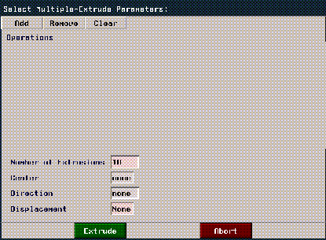
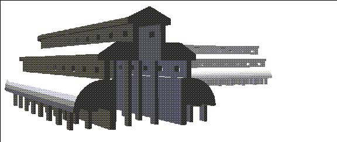

[N-World Contents] [Book Contents] [Prev] [Next] [Index]
Cathedral
In this chapter you'll learn how to create a lamina from a wire, manipulate and edit wire segments, use multiple extrude, and mirror large sections of a building.
In this Chapter
You'll learn about the following techniques and commands:
Sketching the Wire
A lamina is a flat, two-sided polygon which can have any number of edges.
To build a lamina, you first sketch a wire to define the contour (perimeter) of the lamina, then make a polyhedron based on that wire's shape.
1. (CLICK-L) on GeoMenus>File>New Object>Lamina.
- We call the process of drawing wires "sketching " or "encoding." N-Geometry has a special sketch editor devoted just to drawing wires. Before you begin sketching, however, you need to specify your sketching parameters in the dialog box that appears:
Figure 9.1 Setting your sketch parameters
Each of these parameters is described in detail in the N-Geometry Reference Guide. For now, change the following parameters:
2. (CLICK-M) on Mouse Grid (x).
- This constrains wire segments to a 1-unit grid in all three directions.
Figure 9.2 Change the grid parameters
3. (CLICK-L) on the Set Sketch Parameters button.
- The Sketch Editor opens in the N-Geometry window. The target shape for the wire is shown in Figure 9.3:

Figure 9.3 The finished wire-refer back here if you need to
4. Move the cursor straight up the Y axis and (CLICK-L) to start encoding the wire.
- Drag the mouse, then (CLICK-L) at each point until you've created the overhang for the top level roof. The distance between points 2-3, 3-4, and 4-5 should be one grid unit:
Figure 9.4 Starting the wire
Part of planning out a good lamina is determining where you should add segments for later. Under the roof's overhang, make three one-unit segments-later, we'll bridge through the middle segment to make some windows in our structure.
5. Add two more one-unit segments going straight down.
- then repeat the entire process to create both levels of the roof.

Figure 9.5 Adding another roof
Starting an Arc
6. Now, (ALT-L) and move the mouse straight down.
- As you move the mouse, a circle appears, using the segment from the last sketched point to the cursor's current position as the radius.
- We're interested in the portion of the circle's edge, or arc, that leads from the last sketched point.
Figure 9.6 Defining the arc
7. (CLICK-L) when the arc is the right size.
8. Now, drag the mouse and (CLICK-L) at the point along the circle that you want drawn.
Figure 9.7 Completing the arc
The finished arc should look like this:
Figure 9.8 Completed arc
Now start the bottom of the cloister:
9. (CLICK-L) and drag one unit to the right, then (CLICK-L) again.
Figure 9.9 Start of the cloister
10. Now, (ALT-L) to start a new arc.
- Drag the mouse right one unit, creating a preview of a two-unit circle:
Figure 9.10 Preview the circle
11. (CLICK-L) to define the arc, then continue to drag to the left. (CLICK-L) at the point of the circle straight across from where you started:
Figure 9.11 Use the arc tool to create a semi-circle
Now, using the skills you've learned so far, continue sketching the wire until it looks like that in Figure 9.12:
Figure 9.12 Adding a vertex here will let us extrude a column later on
Make sure that the vertical portions are divided into three one-unit segments so that we can bridge through them properly when the lamina's been extruded.
Figure 9.13
12. Now, (ALT-L) to start our last arc.
- Drag the mouse right one unit and (CLICK-L), then drag up one unit to complete the arc.
Figure 9.14 Defining the final arc
13. (CLICK-L) to complete the arc.
Figure 9.15 The completed sketch
If You Make a Mistake While Sketching
To undo the last segment that you sketched, (SHIFT-L) on the sketch editor This undoes the previous segment on the wire-you can undo all the way back to the beginning of the wire.
14. (CLICK-R) when you are finished.
- The following menu is displayed:
Figure 9.16 Choose Wire Only
15. Enter a name like "cathedral" for the wire in the dialog box that appears:
Figure 9.17 Name the wire
Fixing the Wire
Now when you look at the wire, you can probably see how we're going to use it. It looks like the side view of a cathedral that was cut right down the middle along the z-axis.
Later, we'll use the mirror command to create the "right" half of the cathedral, but to do so, we need to ensure that the face we're going to mirror from is perpendicular to the ground.
Look at the top of the wire:
Figure 9.18 Adjusting the wire to build a good lamina
Note that the two ends of the wire are not aligned. Since this section of the wire will create the face that we're going to "mirror" on, they need to be aligned:
16. (CLICK-L) on points on the element sensitivity menu.
17. (SHIFT-L) on the point at the top of the arc:
Figure 9.19 Choose the vertex you want to align
18. (CLICK-L) on Flatten.
- Flatten "aligns" the selected element (in this case a point) with some other element, along a specified axis. In this case we want to move the selected vertex so that it lines up with the vertex that starts the lamina along the X axis.
- When you use Flatten, you're prompted to first specify the axis for the operation:
Figure 9.20 Choose the axis for the flatten operation
19. (CLICK-L) on X.
Now, when you move the cursor over the N-Geometry window, you're in point-select mode.
20. (CLICK-L) on the node at the beginning of the wire:
Figure 9.21 Align the vertex using the vertex indicated
The lower node is "flattened" so that it lies in the same X plane as the target point:
Figure 9.22 Adjusting the wire to build a good lamina
Making the Lamina
Now you have the wire from which to create your lamina. A lamina is a two sided ("flat") polygon that uses the contour of the wire as an outline to describe its shape.
21. (CLICK-L) on GeoMenus>File>New Object.
22. This time, (CLICK-R) on Lamina.
- If you (CLICK-L) you get sent to the sketch editor; (CLICK-R) lets you make a lamina from a wire you've already sketched.
23. Choose the wire "cathedral" from the object list that appears.
Figure 9.23 Choose the wire you created in step 15
24. A dialog box appears, asking for additional parameters to be used in creating the lamina.
Figure 9.24 Name the wire
- For now, use the defaults and (CLICK-L) on the Make Lamina button.
- The lamina is created and given the name "Lamina."
25. (CLICK-L) on GeoMenus>Visibility>Lamina.
- This makes the Lamina the only visible object in the scene. (CLICK-L) on the front face to select it:
Figure 9.25 The completed lamina
Building the Cathedral
Now we can get down to business. We can build the cathedral using some of the same techniques we used in building the mansion earlier, plus some new techniques.
26. (CLICK-L) on faces on the element sensitivity menu.
27. (SHIFT-L) on the front face of the lamina, then (CLICK-L) on Extrude.
- Extrude the face out so your object looks like this:
Figure 9.26 Extrude the face
Now, move the camera so that you're looking at the bottom and right sides of the lamina:
Figure 9.27 Reaping the benefits of planning
Reposition the camera again, so that can see the faces along the bottom of the object.
28. Collect the following faces:
Figure 9.28 Collecting faces where we want to add columns
29. (SHIFT-L) on the collection, then (CLICK-L) on Inset.
- Specify an Inset Width of 0.2.
Figure 9.29 Inset the faces
30. (CLICK-L) on the Inset button.
- The faces are inset by the specified amount:
Figure 9.30 Inset faces
31. (SHIFT-L) on the collection, then (CLICK-L) on Extrude.
- Extrude the faces slightly downward and (CLICK-L).
Figure 9.31 Extrude the faces
Now, since we want all the columns to "line up" with our ground plane, let's use the Flatten command again.
32. (SHIFT-L) on the collection, then (CLICK-L) on Flatten.
33. When prompted, choose the Y axis.
- Like before, N-Geometry goes into point select mode. (CLICK-L) on a point at the base of the main column:
Figure 9.32 Extrude the faces
- The columns "flatten" along the Y axis to the main column:
Figure 9.33 The columns are now aligned
Turning the Object into a "Building Block"
The object of this section is to make the object into a section that can be mirrored over and over to create a larger building. With that in mind, let's continue making our "building block:"
34. Collect the two large faces on the sides of the object.
Figure 9.34 Collect the faces shown on both sides of the object
35. (SHIFT-L) on the collection, then (CLICK-L) on Extrude.
Figure 9.35 Extrude the faces
Making some Windows
Now, let's use the Bridge command to add some simple windows to our structure:
36. (SHIFT-L) on the face shown below:
Figure 9.36 Selecting a face to Bridge for a window
- Remember the three one-unit segments we created when we sketched the wire? Each segment produces a face when extruded, so now it's easy to make our window.
37. (CLICK-L) on the Bridge command.
38. Move the camera so that you can see the back of the same part of the object.
39. (CLICK-L) on the corresponding face on the back of the object to complete the Bridge operation.
Figure 9.37 Bridge through to the back of the object to create a window
- (CLICK-L) on GeoMenus>Shading>Lamina if you want to get a better view of what the Bridge operation did:
Figure 9.38 Shading helps you see the effects of the Bridge operation
Now, repeat the Bridge operation to add a window to the middle level of the cathedral:
Figure 9.39 Bridge another window in the middle level
Mirroring
Now let's Mirror this part of the cathedral.
40. Move the camera so you're looking at the top inside portion of the object and collect the three faces shown in Figure 9.40:
Figure 9.40 Collect the faces shown
The Mirror operation "mirrors" an object's geometry around a single selected face; so while we could select one of these three faces around which to mirror, we'd have "extra" geometry along the "seam." We need to make these three faces into one face.
41. (SHIFT-L) on the collection.
42. (CLICK-L) on Merge Region.
- The faces are combined into one face.
Figure 9.41 Merge Region makes a collection of faces into one face
43. Move the camera back out, but keep it aimed at the new single face.
44. (CLICK-L) on bodies on the element sensitivity menu.
45. (SHIFT-L) on the object, then (CLICK-L) on Mirror.
- N-Geometry goes into face-collect mode.
46. (CLICK-L) on the new face.
- The object mirrors around the selected face.
Figure 9.42 The completed building block
47. (SHIFT-L) on the object again.
48. (CLICK-L) on Mirror again, this time selecting the large face pointing along the Z axis.
Figure 9.43 Mirror the block around one end
49. Mirror the object two more times, each time selecting the large face pointing along the Z axis.
Figure 9.44 The completed hallway
50. (CLICK-L) on GeoMenus>Shading>Lamina to get a better view of your work.
Figure 9.45 Shaded hallway
There you have it! A complete three dimensional structure based on a well-planned sketched wire. As always, planning your objects ahead of time makes it easier to get the results you want in as few steps as possible.
The Advanced Cathedral
Here are some optional additions you can make to your cathedral.
51. (CLICK-L) on faces on the elements sensitivity menu.
52. (SHIFT-L) on the face at the end of the hall, then (CLICK-L) on Multiple Extrude.
- The following dialog box appears:

Figure 9.46 The Multiple Extrude dialog box
The Multiple Extrude operation lets you extrude a face one or more times, optionally combining other operations on the face with each iteration. This operation is described in more detail in a later tutorial.
53. (CLICK-L) on Add.
54. (CLICK-L) on Extend.
- Enter a value of 50 in the dist text edit box.
55. (CLICK-L) on Add again.
56. (CLICK-L) on Rotate.
- Enter a value of 45 in the angle text edit box.
Figure 9.47 Extruding and rotating with the Multiple Extrude operation
57. Leave the rest of the parameters at their default value and (CLICK-L) on the Extrude button.
- The selected face is extruded and rotated:
Figure 9.48 The extruded face
58. (CLICK-L) on bodies on the element sensitivity menu.
59. (SHIFT-L) on the cathedral, then (CLICK-L) on Mirror.
60. Again, (CLICK-L) on the face at the end of the object.

Figure 9.49 The completed cathedral
For a final view, you might want to turn shading for the object back on:

Figure 9.50 The completed cathedral, shaded
You might want to use some of the skills you've learned so far to pull up towers, add doors, and so forth, to the cathedral.
Congratulations
You've now completed a fairly complex structure starting with a single well-planned wire. The techniques you learned in this chapter can be used in creating any object with an irregular contour, whether it be a building or a shard of glass.
[N-World Contents] [Book Contents] [Prev] [Next] [Index]
 Another fine product from Nichimen documentation!
Another fine product from Nichimen documentation!
Copyright © 1996, Nichimen Graphics Corporation. All rights
reserved.